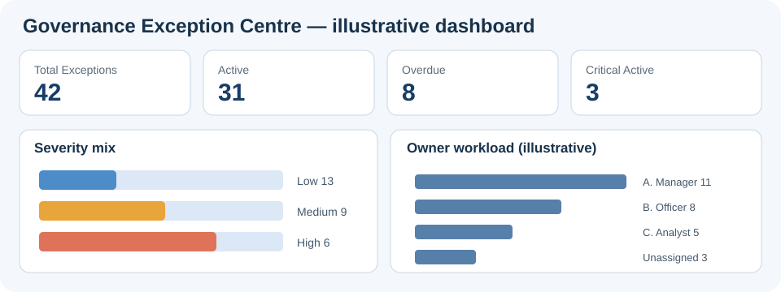

Velora Governance — User Manual
This manual covers Governance, Board Management, Secretariat, Compliance, Risk, Sustainability and Governance Exceptions. Screens and diagrams below are illustrative, not screenshots from a live deployment.
Navigation and roles
Start from the Governance workspace. Access is controlled by Velora roles and record permissions. Typical roles include Governance Administrator, Company Secretary, Governance Officer, Compliance Officer, Sustainability Officer and Internal Auditor. Assign only the roles required by each user's duties.
1. Create the governance entity
- Open Governance Entity.
- Create the company, subsidiary, institution, association or other entity record.
- Set the entity type and legal/operating details.
- Save, then link boards, committees, obligations, registers and reporting records to this entity where the fields exist.
Example: Entity name = “Example Holdings Ltd”; type = “Company”; governance owner = Company Secretary.
2. Board and member setup
- Create a Board and choose Board Type.
- Create Board Member profiles. Capture qualifications, professional memberships, skills and independence status.
- Create Board Appointment records for member tenure and classification.
- Set up committees and charters, then link committee members and appointment dates.
- Use Board Skills Matrix to assess required skills and coverage.
3. Meetings and board packs
- Create a Board Meeting and set date, time, venue/meeting mode and board.
- Add agenda items using the agenda item child records and categories.
- Attach Board Papers; mark paper type and submission status.
- Prepare a Board Pack and include relevant papers.
- Record attendance and quorum, then capture Minutes, Decisions and Resolutions.
- Assign resulting Board Actions to owners with due dates.
Example: Meeting “Q4 Board Meeting”; agenda: “FY budget approval”; paper: “Budget Memorandum”; resolution: “Approve 2027 budget”; action: “Finance Director to publish approved budget by 15 Dec”.
4. Governance calendar and statutory obligations
- Maintain Governance Event Types and calendar events.
- Create Governance Obligations for recurring or one-off compliance requirements.
- Set responsible owner, due date, frequency and evidence reference.
- Track status and overdue items; configure reminder/escalation policy in Governance Automation Configuration.
- Record Corporate Filings, Filing Submissions, Annual Returns and Statutory Register entries.
5. Policies, conflicts, risks and controls
- Create Governance Policy and Policy Type records; set owner and review dates.
- Use Policy Review and Policy Acknowledgement to record review/acceptance.
- Capture Conflict of Interest Declarations and Related Party Interests. Restrict access appropriately.
- Maintain Governance Risk records and controls. Link assessment/evidence and remediation activities according to your configured process.
- Use Compliance Assessment and Compliance Evidence to record testing, findings and proof.
6. Governance Exception Centre

- Open Governance Exception Centre.
- Use Status, Severity and Owner filters to narrow the list.
- Review KPI cards and charts: totals, active, overdue, critical, unassigned and escalated exceptions.
- Open an exception to review source, description, severity, due date and assignment.
- Use Assign Selected to bulk assign selected records.
- Open Timeline to review comments, assignment changes, status updates and evidence references.
- Use Export Management Report for filtered CSV or Print Report for a printable summary.
- Update status and record resolution evidence before resolving/closing.
Example exception
| Field | Example |
|---|---|
| Title | Annual return filing overdue |
| Source | Annual Return / AR-2026-001 |
| Severity | High |
| Due date | 30-Nov-2026 |
| Owner | Company Secretary |
| Status | In Progress |
| Resolution evidence | Receipt number and filing acknowledgement reference |
Example DocType records
| DocType | Example record | Key fields / values |
|---|---|---|
| Governance Entity | Example Holdings Ltd | Type: Company; active: Yes |
| Board | Board of Directors | Entity: Example Holdings Ltd; status: Active |
| Board Meeting | Q4 Board Meeting | Date: 10-Dec-2026; meeting status: Scheduled |
| Board Action | Publish approved budget | Owner: Finance Director; due: 15-Dec-2026 |
| Governance Obligation | Annual return filing | Due date: 30-Nov-2026; owner: Company Secretary |
| Governance Exception | Annual return filing overdue | Severity: High; status: In Progress; owner: Company Secretary |
| Sustainability Metric | Scope 1 emissions | Unit: tCO2e; frequency: Annual |
| Sustainability Report | FY2026 Sustainability Report | Reporting period: FY2026; status: Draft |
7. Sustainability / ESG workflow
- Set up Sustainability Settings and reporting period.
- Configure Sustainability Frameworks, Standards, Disclosure Types and framework mappings.
- Conduct Materiality Assessment and document Materiality Topics.
- Set Sustainability Metrics and data points; assign collection tasks.
- Configure emission sources, categories and factors; create GHG Calculations.
- Define Targets, Progress, Initiatives, Risks and Opportunities.
- Prepare Sustainability Report, sections/content blocks, disclosure assessment and evidence.
- Route reviews, resolve review issues, generate revisions, prepare publication and record distribution.
8. Automation monitoring
- Open Governance Automation Monitor.
- Filter executions by status and type.
- Review failures and error details.
- Retry only when safe and after checking the source record/recipient/configuration.
- Adjust reminder days, escalation timing, retry limits and routing in Governance Automation Configuration.
9. Reports, security and good practice
- Review reports under the user's permissions; exported data is still sensitive.
- Use role-based access for board, shareholder, conflict, related-party and confidential sustainability records.
- Do not share board packs or reports outside approved audiences.
- Keep evidence references clear, traceable and retained according to policy.
- Use the shared Velora Workflow/Approval engine for approval processes; Governance does not create a separate approval engine.
- SLA calculations are supplied by the existing SLA application when connected; Governance does not duplicate SLA rules.